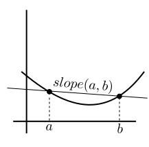

Here are two possible definitions of a convex function. We have
already given the first definition:
The second definition is
Given any two number $a,b$ all numbers between them may be
expressed as $\alpha a+ (1-\alpha) b$ for
some $\alpha\in(0,1).$ Also for any $\alpha\in(0,1)$
the number $\alpha a+ (1-\alpha) b$ must lie
between $a$ and $b.$ So
graphically, the second definition means the chord always lies above the graph of
the function.
We shall now show that these two definitions are equivalent.
Proof:
We shall show this using probability!
Take any $a < b\in{\mathbb R}$ and any $\alpha \in (0,1).$
Define a random variable that takes values $a$ and $b$
with probabilities $\alpha$ and $1-\alpha,$ respectively.
Then Jensen's inequality says $f(E(X))\leq E(f(X)).$
Now $E(X) = \alpha a + (1-\alpha) b$ and $E(f(X)) = \alpha f(a) + (1-\alpha) f(b).$
Hence the result.
[QED]
Proof:
For any $a < b\in{\mathbb R}$ define $slope(a,b)$ as the slope
of the chord of $f(x)$ over $[a,b].$ In other words,
$$
slope(a,b) = \frac{f(b)-f(a)}{b-a}.
$$

Notice that if $x_1 < x_2 < x_3,$ then $slope(x_1,x_2)
\leq slope(x_2,x_3)$ and $slope(x_1,x_3) \leq slope(x_2,x_3).$
Now take any $a\in{\mathbb R}.$ Fix any $b > a.$
Define, for $ x< a,$ a new function $g(x) = slope(x,a).$
Notice that $g(x)$ is a nondecreasing function.
(Why?)
If $x_1 < x_2 <a$ then $g(x_1) = slope(x_1,a) \leq slope(x_2,a) = g(x_2).$
Also it is
bounded from above by $slope(a,b).$
(Why?)
If $x < a < b$ then $g(x) = slope(x,a) \leq slope(a,b).$
So $\lim_{x\rightarrow a-} g(x)$ must exist finitely. (Why?)
Let $A = \{g(x)~:~x < a\}.$ Then $A\neq\phi$
and $A$ is bounded from above by $b.$
So $\sup(A)$ exists. Call it $m.$
Take any $\epsilon>0.$
Then $\exists q\in A~~q\in (m-\epsilon,m].$
Now $q = g(p)$ for some $p < a.$
Then for any $x\in (p,a)$ we have $g(p) \leq g(x) \leq m.$
Hence the result.
Call it $m.$
Define $\ell_a(x)$ as the line through $(a,f(a))$ with
slope $m.$ In other words, $\ell_a(x) = f(a) + m(x-a).$
It is easy to see that this $\ell_a(x)$ works for us.
[QED]
Comments
To post an anonymous comment, click on the "Name" field. This
will bring up an option saying "I'd rather post as a guest."